In this challenge we will go through 3 brute force attacks on HTTP, RDP and SSH services.
We will use Wireshark, and it's powerful filters to find answers to challenge questions in HTTP and RDP part.
For the SSH part of this challenge, we got only raw log file from the server. Linux commands, especially "grep" will help us to get all the important information we need.
After launching terminal, go to Desktop/ChallengeFile directory. Unzip the challenge files using 7za command.
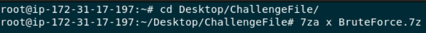There should be a new "BruteForce" directory, after listing its content you should see 2 files.
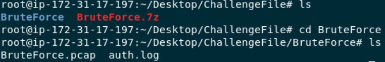The first part of the challenge consists of investigating pcap file with Wireshark. You can open the file using the command line like this...
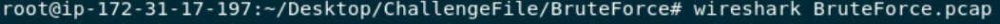After going to Statistics -> Conversations, you can see the most amount of packets is sent between 192.168.190.137 and 51.116.96.181.
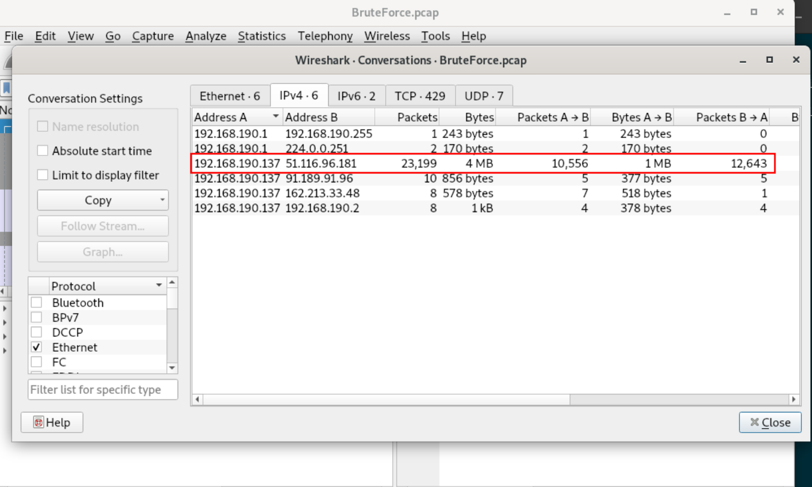We can set filter to list all the packets exchanged between these 2 addresses. Adding "http" to the end of the filter will list only HTTP protocol packets.
Just by looking at the first 2 packets, we can tell that 192.168.190.137 is client and 51.116.96.181 is server.
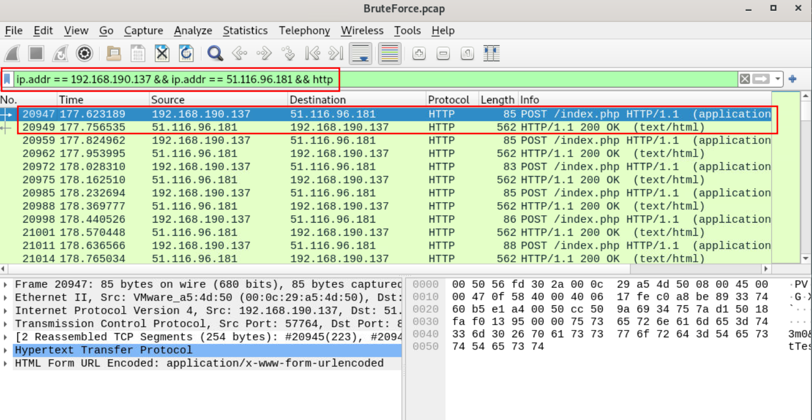Question: What is the IP address of the server targeted by the attacker's brute-force attack?
Answer: 51.116.96.181
After looking at all the HTTP requests sent by attacker, you can see that all of them are POST requests to /index.php directory.
Question: Which directory was targeted by the attacker's brute-force attempt?
Answer: index.php
To tell if any of the login attempts were successful, I would check the HTTP status code of the responses. That's not the way here, all the responses have 200 OK status code.
I checked the body of the first response. You can do that by clicking left mouse button to the response packet -> Follow -> HTTP Stream.
You can see there is "Incorrect" string in the p tag of HTML body.
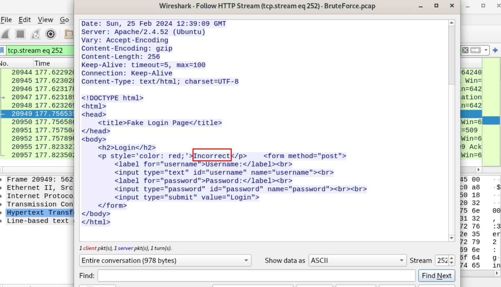I guess the successful login attempt should contain "Correct" in the response, right? You can filter that by adding data-text-lines contains "Correct".
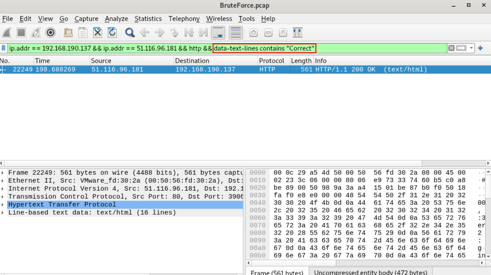After checking the packet that was listed after applying the filter, you can tell It truly contains the "Correct" string.
By following the HTTP stream of this packet, you can inspect the HTTP request including the valid credentials.
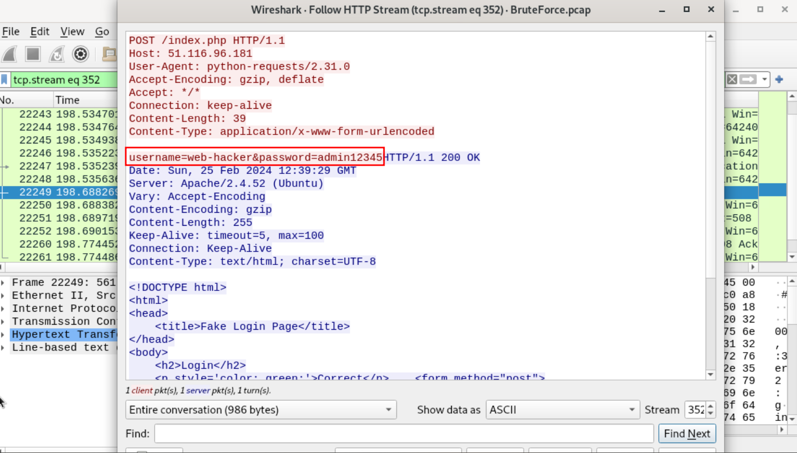Question: Identify the correct username and password combination used for login.
Answer: web-hacker:admin12345
For the RDP part of this challenge, we will get all the relevant packets by adding "rdp" to filter. All the accounts that attacker attempted to compromise will be listed by "rdp.neg_type == 0x01" filter.
There are many packets listed after applying the filter, but only 7 of the usernames are unique.
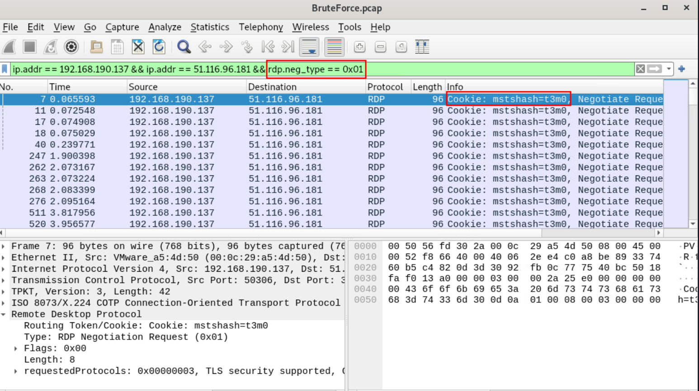Question: How many user accounts did the attacker attempt to compromise via RDP brute-force?
Answer: 7
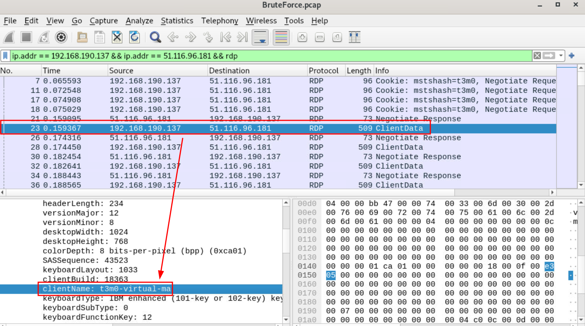Question: What is the “clientName” of the attacker's machine?
Answer: t3m0-virtual-ma
For this part, you have to investigate the "auth.log" file.
After analyzing the logs, I found that all the unsuccessful attempts includes "Failed password" string, successful ones includes "Accepted password".
By running - grep "Accepted password" auth.log command, you will get all the successful attempts.
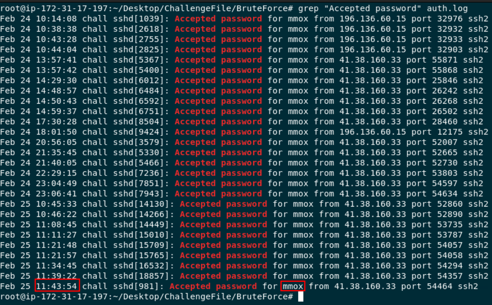Question: When did the user last successfully log in via SSH, and who was it?
Answer: mmox:11:43:54
To get all number of all the unsuccessful attempts, you can run - grep "Failed password" auth.log | wc -l.
Question: How many unsuccessful SSH connection attempts were made by the attacker?
Answer: 7480
A simple "brute force" search on the MITRE ATT&CK website should lead you here.
Question: What technique is used to gain access?
Answer: T1110